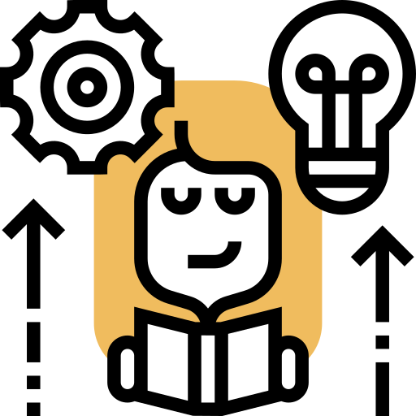
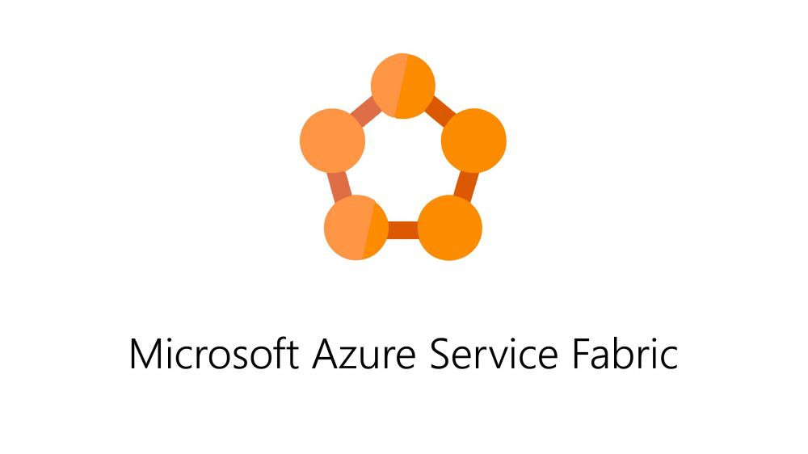

Compétences
Créativité

Créativité
Être créatif au travail signifie généralement prendre des risques, ce qui peut vous faire hésiter. La peur de l'inconnu est une chose puissante, surtout quand elle signifie que vous pourriez échouer. Mais voilà : la créativité au travail est absolument importante. Si vous pouvez appliquer la pensée créative à votre vie professionnelle quotidienne, vous constaterez que non seulement la journée ne sera plus une corvée, mais que vous obtiendrez des résultats plus significatifs.
La créativité est absolument nécessaire sur le lieu de travail de deux manières principales : la pensée créative et la résolution créative des problèmes. Dans l'ingénierie, la crétivité est une qualité d'autant plus importante, car le coeur de notre métier est de trouver des solutions les plus simples possible, a des problèmes complexes.
A Intech, de par la formation par les projets, cette créativité est fortement mis en avant Au sein, d'inwink, on est invité à utiliser cette créativité au quotidien, tant dans l'artchitecture logiciel, qu'a des problèmatique d'UX.
Je pense que crétivité et autonomie font la paire, en effet, il ne peut y avoir de créativité là où il n'y a pas d'autonomie, d'autant plus que quand la solution est trouvé, on y trouve une grande satisfaction qui encourage a se dépasser toujours plus.
Découvrez les projets où j'ai pu appliquer cette compétence
Esprit d'équipe
{kind=link}
Esprit d'équipe
L'esprit d'équipe est la clé du succès. L'esprit d'équipe joue un rôle important tant dans la vie personnelle que professionnelle. Lorsque des personnes se réunissent pour atteindre un objectif commun et qu'une attitude commune se manifeste pendant le travail, on parle d'esprit d'équipe. Un proverbe est établi comme suit : "Se réunir est un début. Rester ensemble est un progrès. Travailler ensemble, c'est réussir" - Henry Ford. Ainsi, l'esprit d'équipe souligne l'importance de travailler ensemble.
- L'esprit d'équipe est la volonté de coopérer au sein d'une équipe.
- L'esprit d'équipe fait que les membres veulent que le groupe réussisse.
L'esprit d'équipe aide donc à obtenir des résultats fructueux dans un délai raisonnable bien meilleur que de facon individuel. Durant toute ma scolarité, le travail en équipe était une des clé de la réussite, de pars la philosophie en mode projet, travailler ensemble, coopérer, réussir ensemble, m'a fait réaliser les tenants et aboutissants de cette philosophie, qui est également très présente en entreprise.
En effet, durant mes 2 années d'alternance, que j'ai cerné toute l'importance du travail en équipe. On ne peut pas se positionner sur une problématique, travailler dans son coin et donner des signes de vie une fois la réponse apportée, car les autres maillons qui dépendent de votre réponse, ne peuvent pas eux-mêmes apporter de réponse aux maillons encore au-dessus.
Il faut communiquer, interagir, avec le reste de l'équipe, car pour bien comprendre ce que l'on fait au sein de l'entreprise, il faut comprendre ce que les autres font, c'est seulement en comprenant cela, que l'on trouve notre vrai objectif et que l'on peut avancer.
Découvrez les projets où j'ai pu appliquer cette compétence
.Net

.Net
.NET est une plateforme de développement Open source pour la création de nombreux types d’applications. C'est une puissante plateforme, qui permet de developper des applications de petites à très grandes envergures. Au fil des années, et des projets j'ai mu monter en compétences sur .Net et le C# de manière générale.
Mes premiers pas sur .Net remontent à ma 2ème années, et depuis je ne l'ai jamais quitté, de mes premières API un peu bancales jusqu’à aujourd’hui en entreprise. De par la possiblité de faire du code multiplateforme performant : Cloud, API, mobile, architecture distribuée, IOT... tout est possible en .Net
Cette plateforme fournit donc de puissants outils aux developpeurs tout en étant "environnement agnostique"
Auto-formation
{kind=link}
Autonomie
Dans le grand spectre des compétences nécessaires pour faire un bon développeur, j’estime qu’une des compétences clé est l’autoformation, et plus généralement à apprendre à s’autoformer. Le fait de s’autoformer, comme l’indiquer dans le mot, c’est savoir apprendre par soi-même. Dans un métier comme le nôtre, où de nouvelles technologies voient le jour très souvent et qui est fortement animé par les effets de mode, c’est un compétence clé et inhérente à la réussite professionnelle qui découle en grande partie de la vielle technologique, constante que j’estime être un devoir.
Durant, l’un de mes projets pour un client, pour Pernod Ricard, les attentes attendues par le client nous demandaient à développer une interface utilisateur complexe. En premier lieu, nous étions partis sur une interface utilisateur simple, en razor – une technologie qui permet le rendu de page web statique -, une technologie que moi et mon collègue maîtrisions cependant qui ne répondait pas aux besoins du client. Nous avons donc décidé t’utiliser React – un framework javascript permettant de concevoir des interfaces utilisateurs dynamique. Je me suis porté volontaire pour assumer cette partie ainsi que de rédiger des tutos afin d’initier d’autre personne dans l’entreprise à l’utiliser. J’ai donc commencé à développer des fonctionnalités simples à l’aide de React au bout de 3 semaines, je commençais à bien comprendre et utiliser le React, et au fur et à mesure des fonctionnalités plus complètes.
L’utilisation de cette techno fut un succès et le projet fut rendu dans les attentes et ont répondu aux attentes du client qui en était satisfait, moi et mon collègue nous avons même animé un Oh My Code (ce sont des petites conférences d’1/2 heures en interne afin de faire découvrir une techno ou donner un retour d’expérience sur un projet). J’ai beaucoup évolué, sur la partie front-end du développement que je maîtrise beaucoup mieux actuellement, et j’estime avoir un bon niveau technique maintenant, au point où c’est une compétence que je mets maintenant en avant. J’en suis très content, car cela m’a permis de progresser techniquement et dans les responsabilités que l’entreprise m’a données. Grâce à cette compétence acquise, aujourd’hui, je travaille sur la partie produit de l’entreprise et plus pour un projet client : beaucoup plus poussé techniquement, et riche en fonctionnalité qu’un projet client.
Il ne faut donc pas hésiter « à mettre les mains dans le cambouis », même s’il est vrai que cela peut faire peur au début de partir dans l’inconnu et devoir dépasser sa zone de confort surtout dans un cadre professionnel où parfois, il peut y avoir de fortes contraintes comme les deadlines. Mais le jeu en vaut la chandelle, et une compétente apprise ne peut qu’être bénéfique, même si celle-ci n’est pas utilisée à court terme, de plus cela apporte la satisfaction d’avoir appris de nouvelles choses.
Découvrez les projets où j'ai pu appliquer cette compétence
Service Fabric
{kind=link}
Service Fabric
Service Fabric est une plateforme de systèmes distribués qui facilite le conditionnement, le déploiement et la gestion de microservices évolutifs et fiables et qui répond aux défis importants que posent le développement et la gestion des applications cloud.
J'ai commencé à utilisé Servic Fabric et a faire de l'architecture distribuée chez Inwink, où l'architecture microservices à une places importantes. J'ai utilisé cette techno pour la créations de différents connecteurs pour communiquer entre inwink et différentes applications tierces. SF (pour les intimes) permet de créer des architectures robuste, scalable, d'orchestrer facielement ses microservices.
React
{kind=link}
React
Utilisée par les entreprises géantes de la Tech comme Facebook, Twitter ou Netflix, il s'agit de l'une des bibliothèques JavaScript les plus populaires pour construire des interfaces web. Son approche par composants réutilisables en fait un outil particulièrement modulaire pour développer des applications. Elle permet une synchronisation plus simple et plus efficace entres les données de l'application et et le rendu
Ma première expérience en React, et aussi ma première vraies expérience en front, ayant, de base, plus une appétence pour le back, où je devais m'occuper de créer des composant pour une application web pour gérer des réunions, j'ai très vite commencé à me documenter sur internet et avec un peu de temps, mon tout premier composant React était né.
Aujourd'hui, je me sens bien plus à l'aise avec React et pour moi il est l'extension complète de tout ce que je peux développer côté back. Comme pour beaucoup d'autres technologies, on ne peut jamais maitriser à 100% une compétence, c'est pour cela que j'en apprends chaque jour en l'utilisant.